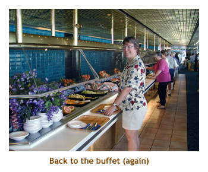

[ Home ] [ Travel ] [ Photography ] [ Pets ] [ Games] [ Rowing] [ Physics ]


Cruising on the Maasdam
Travel
Cruises
Past Cruises (Diaries)
Future Cruises
Rogues Galleries
Land Trips
Diaries (Land Trips)
Hawai'i - Big Island - 04'01
Hawai'i - Maui - 05'02
Hawai'i - Big Island - 04'03
Hawai'i - Kaua'i - 09'04
Hawai'i - Big Island - 04'06
Hawai'i - Maui - 04'06
Mainland China - 05'07
Phoenix, Arizona - 12'07
Greek Isles - 05'08
Hawai'i - Kaua'i - 09'08
Hawai'i - Big Island - 09'09
Hawai'i - Maui - 05'12
Hawai'i - Big Island - 04'13
Ireland - 08'13
Mexico - Cancun 11'13
France/Belgium/Lux 07'15
Hawai'i - Big Island - 05'17
England / Wales - 06'17
Hawai'i - Big Island - 09'19
Photography
Cameras
Underwater
Pets
Tara
Blackie
Whitey
Muffy
Ollie
Rusty
Fluffy
Rufus&Dufus
Games
Rowing
Physics
Rating (out of 5):
Ship
Food  Service
Service  Itinerary
Itinerary
We enjoyed our first cruise so much (Alaska, Aug 2001) that as soon as we got off the Sea Princess we booked for this cruise. We had never been to the Caribbean before, so this was all going to be new territory for us. Being as this was only 2 months after 9/11, prices were very reasonable.
Day 0 (Nov 24) - Getting to Ft Lauderdale
The silver lining to the flight was that we met our (soon to be) good friends Ann and Oskar, who were also going on the same cruise, and had lunch with them while
waiting for our NWA flight at the Calgary Airport.
Day 1 (Nov 25) - Boarding in Ft Lauderdale
We finally made it to Ft Lauderdale on the day of the cruise, and boarded the ship in the early afternoon. The check-in lines at the terminal were short and everything went well until we walked into the waiting room. There, we were given a number and had to wait over an hour before we could board the ship. As they called out numbers, small groups of passengers were escorted onto the ship. I don't know why they didn't let us directly on to the ship after check-in.
By this time it was mid-afternoon. We quickly went to our room, dumped off our stuff and headed to the buffet for lunch.
Back in our room, I discovered chunks of apple on the carpet, and in the closet were some clothes from the previous residents.
I called the cabin steward and he said he hadn't had time to clean the room. Low marks for HAL! From that point on, though,
our room was spotless. Our room was an outside
cabin as there were very few balconies on the Maasdam. Oh, I missed my balcony.
Day 2 (Nov 26) - A Day At Sea
We arose early the next morning (6 AM) and headed up to the top deck. After some time on deck we went to the buffet for breakfast. We were surprised that it didn't open until 7:30 AM. No Princess 24 hour buffet! Breakfast was 7:30 to 10:30 and lunch from 11:00 to 2:00. No more early breakfast! HAL isn't the only line with restricted buffet hours - only Princess seems to be 24 hours.
As we spent the day checking out the ship, we found that the Maasdam was showing her age. Lots of scuff marks on the walls and corners.
But a lot of the ship was still very beautiful. I especially liked the library. We had a wonderful day just relaxing on the ship. We also participated
in the "walk-a-mile" for the Passport to Fitness program. HAL has since given up this program - too bad! It was a fun program.
Another first for us was fixed seating for dining. Our previous Princes cruise was Personal Choice dining. We were seated with a
wonderful family - two adults about the same age as us, plus their 23 year old son. We really enjoyed their company each evening.
Day 3 (Nov 27) - Cozumel, Mexico
We were up on deck early to watch the ship dock at Cozumel. We hadn't booked a ship excursion and decided to grab a cab and head down to Chankanaab Park to snorkel. The park is really beautiful with a white sandy beach and a very interesting botanical garden. The snorkelling was OK. The underwater statues were a novel idea. We have done lots of snorkelling in Hawai'i and that is our benchmark. We had just discovered that Caribbean snorkelling is not up to par with Hawai'i. Diving might be a different matter though.
In the afternoon, we just walked around the shops at the foot of the cruise dock. We didn't make it into the main town of San Miguel.
Cozumel seems like a beautiful island and worth a return trip. As we were leaving Cozumel, the wind came up to gale force and we
experienced "high seas". It was fun walking the promenade deck either into the wind or with the wind at your back, and having the deck
yawing upwards and downwards. I'm glad they had railings! That night we tossed and turned a lot. Luckily neither of us get motion
sickness at all.
Day 4 (Nov 28) - George Town, Grand Cayman
We had booked an excursion to Stingray City with Captain Marvin, but the ship was delayed getting into port, so we missed it (due to fighting the heavy winds and seas the previous day). Instead, we grabbed a cab and headed up to Cemetary Reef, at the end of 7 Mile Beach. The snorkelling off the beach was pretty good. The beach was beautiful. There are only a few public accesses to the beach, most are blocked by hotels which charge to enter the beach area.
After our snorkel, we returned to town and walked around the streets. It started to rain, so we popped into a convenient office building to wait it out, and I couldn't believe my eyes. We were in the Royal Bank! We were surprised to find RBC, BMO and all our local Canadian banks in town. It seemed strange seeing them in a tropical location. GC seems to be a fairly wealthy island. Next time we're here we have to do Stingray City .
Note that GC is a tendering site - the bay is too shallow for a dock. Make sure you leave yourself
extra time for getting to and from the ship.
Day 5 (Nov 29) - Ocho Rios, Jamaica
Up early again to watch us dock at Ocho Rios. The dock is right next to an old sugar refinery / storage building. We didn't book an excursion in Ocho Rios, so just headed into the town to look around. It's only a short wolk from the dock. The town wasn't very big, but the locals were everywhere and very "in your face". It was really annoying to be constantly accosted for a cab ride or to buy something. Neither of us liked the town or felt comfortable there. This is one port that we could have easily skipped! People who did the Dunn's River falls or other excursions seemed to have a good time. Next time we're here, we'll have to do that.
We headed back to the ship and spent the rest of the day aboard relaxing. I think that I enjoy being on the ship as
much as visiting ports (depending on the port, of course).
Day 6 (Nov 30) - Another Day At Sea
 Another day at sea allowed us to enjoy the ship for the day. For some reason, the promenade deck is quiet - I suppose because most people like to sit around the pool on the top deck. We cruised along the south coast of Cuba, which was visible from time to time.
We really enjoy walking around the promenade deck - shaded from the sun and not too crowded.
The Maasdam is one of the few ships that has a full, wrap around promenade deck. Other ships are split over
two decks (with stairs), or the deck just doesn't go all the way round. We also tried an afternoon movie at the Wajang Theatre.
The movie wasn't so great, but the theatre was really nice (with popcorn!).
Day 7 (Dec 1) - Half Moon Cay
Another sunny day! We arrived at the island early in the morning and anchored out in the bay. Half Moon Cay used to be Little San Salvadore Island, before it was purchased by HAL in the late 1990's. What a beautiful island! The white sand is like powder and the water is brilliant shades of blue. (A lot of the folliage was damaged by hurricane Michelle (a month earlier), but it should recover.) This is our favorite of all the Caribbean islands. There are only cruise folks on the island, and all of the food / shopping services are run by the crew. You don't feel the least bit afraid of leaving your camera and goods on a lounge chair as you head into the water for a swim.
We tried snorkelling, but the water was too murky due to a previous storm. The beach barbeque was wonderful.
There seemed to be a lot of organized activities with water sports and even a beach tug-of-war.
This island is certainly worth coming back to.
Day 8 (Dec 2) - Ft Lauderdale
We were up early again and in time to see the ship sailing into Port Everglades harbour. Disembarkation went pretty smooth and we used the HAL bus to get to the airport.
Overall, the cruise was wonderful. I would hesitate to go on the Maasdam again. It was showing it's age, and the upkeep was not as good as the Sea Princess. For example, when the wait staff cleaned the tables in the buffet area, they just brushed the crumbs onto the floor. We weren't impressed. We'll have to give HAL another try. Maybe their newer ships are nicer.